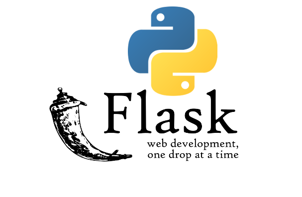

Гайд по Flask: от основ до продвинутых техник

Flask — это микрофреймворк для создания веб-приложений на Python. Он прост в изучении, но мощный enough для создания сложных приложений. Давайте разберём его от основ до продвинутых возможностей.
1. Установка и минимальное приложение
Установка Flask:
pip install flask
Простейшее приложение (app.py):
from flask import Flask
app = Flask(__name__)
@app.route('/')
def hello():
return "Привет, мир!"
if __name__ == '__main__':
app.run(debug=True)
Запуск:
python app.py
2. Основные концепции Flask
Маршрутизация (Routing)
@app.route('/user/<username>')
def show_user(username):
return f'Пользователь: {username}'
HTTP-методы:
@app.route('/login', methods=['GET', 'POST'])
def login():
if request.method == 'POST':
return "Обработка входа"
return "Форма входа"
Шаблоны (Jinja2)
from flask import render_template
@app.route('/hello/<name>')
def hello(name):
return render_template('hello.html', name=name)
Файл templates/hello.html:
<!DOCTYPE html>
<html>
<head>
<title>Приветствие</title>
</head>
<body>
<h1>Привет, {{ name }}!</h1>
</body>
</html>
3. Работа с формами
Установка Flask-WTF:
pip install flask-wtf
Пример формы:
from flask_wtf import FlaskForm
from wtforms import StringField, SubmitField
class MyForm(FlaskForm):
name = StringField('Имя')
submit = SubmitField('Отправить')
Обработка формы:
@app.route('/form', methods=['GET', 'POST'])
def form():
form = MyForm()
if form.validate_on_submit():
return f'Привет, {form.name.data}!'
return render_template('form.html', form=form)
4. Работа с базой данных (SQLAlchemy)
Установка:
pip install flask-sqlalchemy
Настройка:
from flask_sqlalchemy import SQLAlchemy
app.config['SQLALCHEMY_DATABASE_URI'] = 'sqlite:///site.db'
db = SQLAlchemy(app)
class User(db.Model):
id = db.Column(db.Integer, primary_key=True)
username = db.Column(db.String(20), unique=True, nullable=False)
Использование:
@app.route('/user/<username>')
def add_user(username):
user = User(username=username)
db.session.add(user)
db.session.commit()
return f'Добавлен пользователь {username}'
5. Аутентификация (Flask-Login)
Установка:
pip install flask-login
Настройка:
from flask_login import LoginManager, UserMixin, login_user
login_manager = LoginManager(app)
class User(UserMixin, db.Model):
# ... (как в предыдущем примере)
Защита маршрутов:
from flask_login import login_required
@app.route('/protected')
@login_required
def protected():
return "Только для авторизованных!"
6. REST API с Flask
Простой API:
from flask import jsonify
@app.route('/api/users')
def get_users():
users = User.query.all()
return jsonify([{'id': u.id, 'name': u.username} for u in users])
Использование Flask-RESTful:
pip install flask-restful
Пример:
from flask_restful import Resource, Api
api = Api(app)
class UserResource(Resource):
def get(self, user_id):
user = User.query.get_or_404(user_id)
return {'username': user.username}
api.add_resource(UserResource, '/api/users/<int:user_id>')
7. Развёртывание (Deployment)
Настройка для продакшена:
app.config.update(
DEBUG=False,
SECRET_KEY='real_secret_key_here'
)
Популярные варианты деплоя:
-
WSGI сервер (Gunicorn):
pip install gunicorn gunicorn -w 4 app:app -
Docker:
FROM python:3.9 WORKDIR /app COPY . . RUN pip install -r requirements.txt CMD ["gunicorn", "-w", "4", "app:app"] -
Platform as a Service:
- Heroku
- PythonAnywhere
- Google App Engine
8. Полезные расширения
| Расширение | Назначение |
|---|---|
| Flask-Mail | Отправка email |
| Flask-Migrate | Миграции базы данных |
| Flask-SocketIO | Веб-сокеты |
| Flask-Caching | Кэширование |
| Flask-Admin | Админ-панель |
9. Лучшие практики
-
Структура проекта:
/myapp /static /templates /models /views __init__.py config.py -
Конфигурация через классы:
class Config: SECRET_KEY = 'dev_key' SQLALCHEMY_DATABASE_URI = 'sqlite:///site.db' app.config.from_object(Config) -
Фабрика приложений:
def create_app(config_class=Config): app = Flask(__name__) app.config.from_object(config_class) # Инициализация расширений return app
10. Что дальше?
- Изучите Flask Blueprints для модульных приложений
- Попробуйте GraphQL с Flask (Ariadne)
- Посмотрите Flask + React/Vue для SPA
- Исследуйте асинхронный Flask (Quart)
Flask — это gateway drug в мир веб-разработки на Python. Начните с простого и постепенно усложняйте свои проекты! 🚀
Примеры кода: Официальная документация Flask
Готовые проекты: Awesome Flask